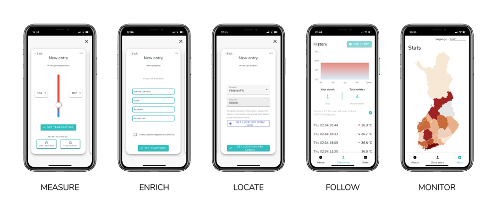

Use the app 10 seconds a day
Launch the COVIDstoplight appTo participate, just report your fever and other symptoms anonymously once a day on the app.
Available in 6 languages!
Mission: track the spread of COVID-19
The current scale of lab testing does not allow healthcare professionals to monitor the spread of the virus well enough, as a large amount of affected people are not tested at all. Our goal is to help citizens, communities, and society as a whole in the fight against the coronavirus pandemic by providing a solution for mapping the extent of the pandemia.
The COVIDstoplight works by having ordinary people around the world self-report their body temperature and relevant symptoms. Using biological population methods we can estimate the prevalence of COVID-19 infections and provide authorities with data on how many people are sick in real-time.
Authorities are faced with the challenge of balancing between making too few restrictions, and risking that the outbreak expands, or making too many restrictions and for too long, potentially unnecessarily harming normal life and the economy. We hope that authorities could simply look at the data collected by the COVIDstoplight, which covers more people and at an earlier stage than just the records of people who seek medical care and get tested.
Read more: Frequently asked questions
How you can help
Subscribe to announcements
Learn more
See how Fevermap works in action